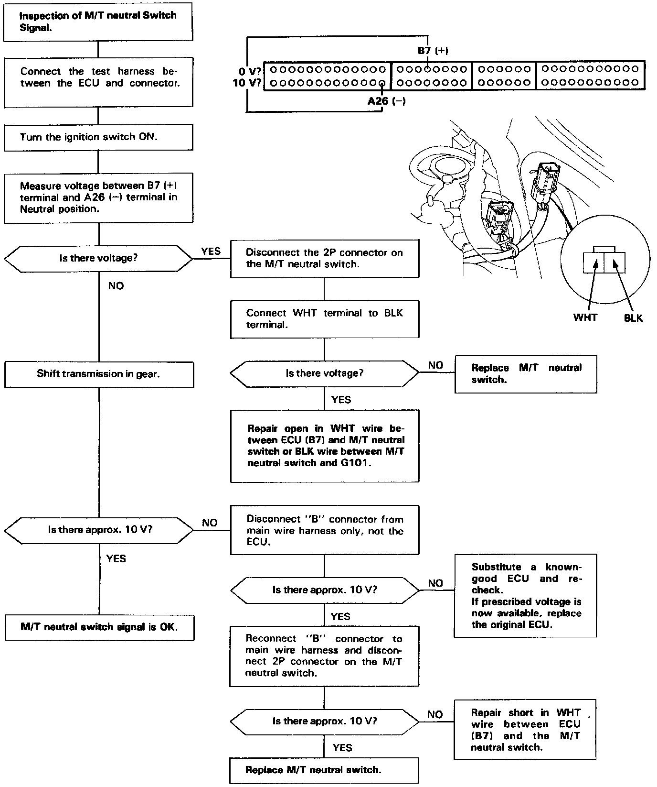

Operation CHARM
: Car repair manuals for everyone.
Home
>>
Acura
>>
1992
>>
Legend Sedan V6-3206cc 3.2L SOHC FI
>>
Repair and Diagnosis
>>
Sensors and Switches
>>
Sensors and Switches - Powertrain Management
>>
Sensors and Switches - Computers and Control Systems
>>
Transmission Position Sensor/Switch
>>
Testing and Inspection
>>
M/T Neutral Switch Signal
M/T Neutral Switch Signal

M/T Neutral Switch Signal
This signals the ECU when the transmission is in Neutral.